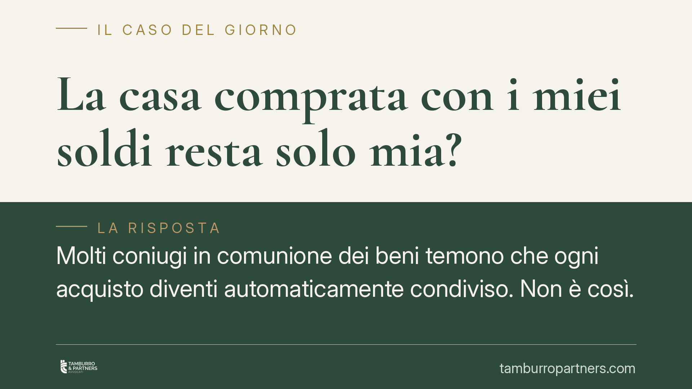

La casa comprata con i miei soldi resta solo mia?
Molti coniugi in comunione dei beni temono che ogni acquisto diventi automaticamente condiviso. Non è così. Il Codice civile individua categorie di beni che restano personali, anche in costanza di matrimonio. Ma la regola opera solo se si rispettano precise condizioni formali e probatorie. Vediamo quando la casa comprata con denaro proprio, o ricevuta in eredità, resta davvero soltanto tua.

Il punto di partenza: comunione non significa tutto in comune
In regime di comunione legale dei beni, la regola generale è che gli acquisti compiuti durante il matrimonio cadono in comunione, cioè appartengono per metà a ciascun coniuge. Questa impostazione, però, conosce eccezioni rilevanti, elencate dall'art. 179 del Codice civile.
Non tutto ciò che entra nel patrimonio di uno dei coniugi diventa automaticamente condiviso. Il legislatore ha voluto tenere fuori dalla comunione alcune categorie di beni, definiti "beni personali".
Inquadramento normativo
L'art. 179 c.c. individua i beni che restano esclusivi. Tra questi rilevano soprattutto:
- i beni di cui il coniuge era già proprietario prima del matrimonio;
- i beni acquisiti per donazione o successione (cioè per eredità), salvo che l'atto di liberalità o il testamento precisino che sono attribuiti alla comunione;
- i beni acquistati con il prezzo del trasferimento dei beni personali o con il loro scambio, purché ciò sia dichiarato nell'atto di acquisto.
La Corte di Cassazione ha chiarito i presupposti applicativi. Con la sentenza n. 10855/2010 ha ribadito che, per gli immobili, non basta che il denaro provenga da fonti personali: occorre che nell'atto di acquisto sia dichiarato l'impiego di quel denaro personale e che il coniuge non acquirente partecipi all'atto confermando la natura personale della provvista. La sentenza n. 21494/2014 ha ulteriormente precisato la funzione di questa dichiarazione, distinguendo tra i beni personali "per natura" (ad esempio quelli anteriori al matrimonio o ereditati) e i beni acquistati per reimpiego, per i quali la forma è più stringente.
Cosa cambia in concreto
La distinzione ha effetti pratici decisivi.
Casa comprata prima del matrimonio. Resta personale. La comunione legale opera solo per gli acquisti successivi alle nozze. Un immobile già di tua proprietà quando ti sei sposato non entra in comunione per il solo fatto del matrimonio.
Casa ricevuta in eredità o in donazione. Resta personale, anche se il trasferimento avviene durante il matrimonio. È un acquisto a titolo gratuito, non frutto dell'attività della coppia. Fa eccezione il caso in cui il testatore o il donante abbiano espressamente disposto l'attribuzione alla comunione.
Casa comprata durante il matrimonio con denaro personale. Qui la situazione è più delicata. Il denaro può anche essere tuo (ad esempio, ricavato dalla vendita di un immobile ricevuto in eredità), ma se non lo dichiari nell'atto e non fai intervenire il coniuge a confermarlo, l'immobile rischia di cadere in comunione. La provenienza del denaro, da sola, non è sufficiente a escludere la comproprietà.
È un punto spesso sottovalutato. Molte controversie, in sede di separazione o divorzio, nascono proprio dalla mancata formalizzazione del reimpiego.
Il problema della prova
Anche quando la natura personale è astrattamente riconosciuta, in caso di contestazione occorre dimostrarla. Per i beni anteriori al matrimonio la prova è agevole: basta la data dell'atto. Per gli acquisti da reimpiego, invece, il coniuge che invoca l'esclusività deve poter provare sia la provenienza personale del denaro sia il collegamento con il nuovo acquisto.
Documentazione bancaria, atti di provenienza, dichiarazioni rese in sede di rogito diventano elementi centrali. La loro assenza può ribaltare l'esito di un giudizio.
Cosa fare in concreto
- Verifica il tuo regime patrimoniale. Controlla se sei in comunione o in separazione dei beni: le conseguenze cambiano radicalmente.
- Dichiara sempre il reimpiego nell'atto. Se acquisti con denaro personale, fai inserire nel rogito la provenienza e fai intervenire il coniuge per confermarla.
- Conserva la tracciabilità del denaro. Mantieni estratti conto, atti di vendita e documenti che colleghino la provvista personale al nuovo acquisto.
- Custodisci testamenti e atti di donazione. Servono a dimostrare l'origine gratuita del bene ricevuto.
- Consigliamo un confronto preventivo con un legale prima dell'acquisto, quando è ancora possibile impostare correttamente l'atto ed evitare contenziosi futuri.
Pianificare in anticipo costa meno che ricostruire, anni dopo, la provenienza di un immobile davanti a un giudice.
Disclaimer
Contributo informativo a cura di Tamburro & Partners - Avv. Giuseppe Tamburro. Non costituisce parere legale.
Ogni famiglia ha il suo equilibrio.
Separazione, divorzio, affidamento, assegno: se vuoi un confronto riservato su una specifica situazione, scrivi allo studio. Ti rispondiamo entro un giorno lavorativo.